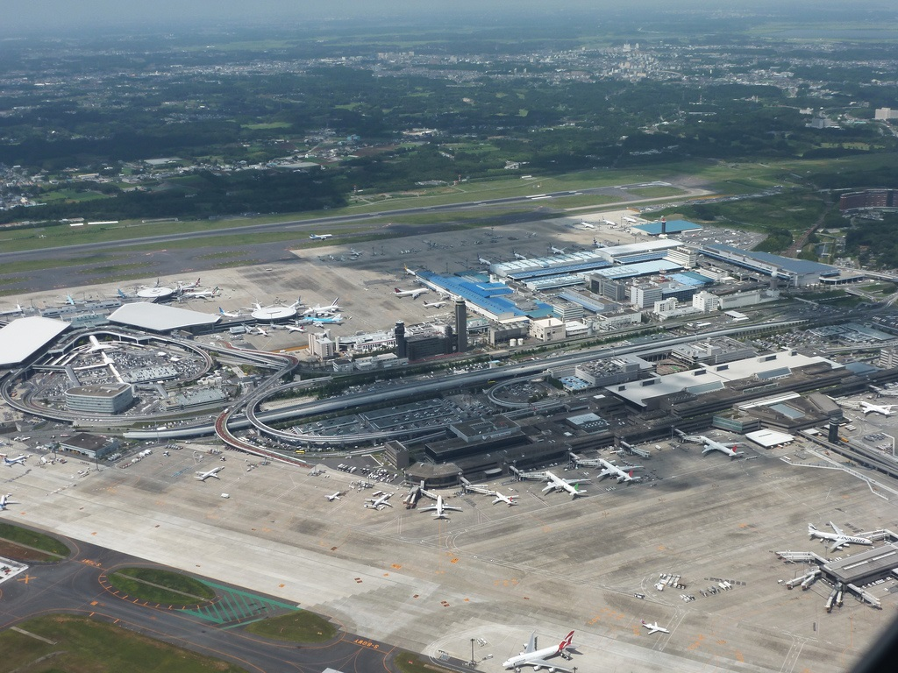
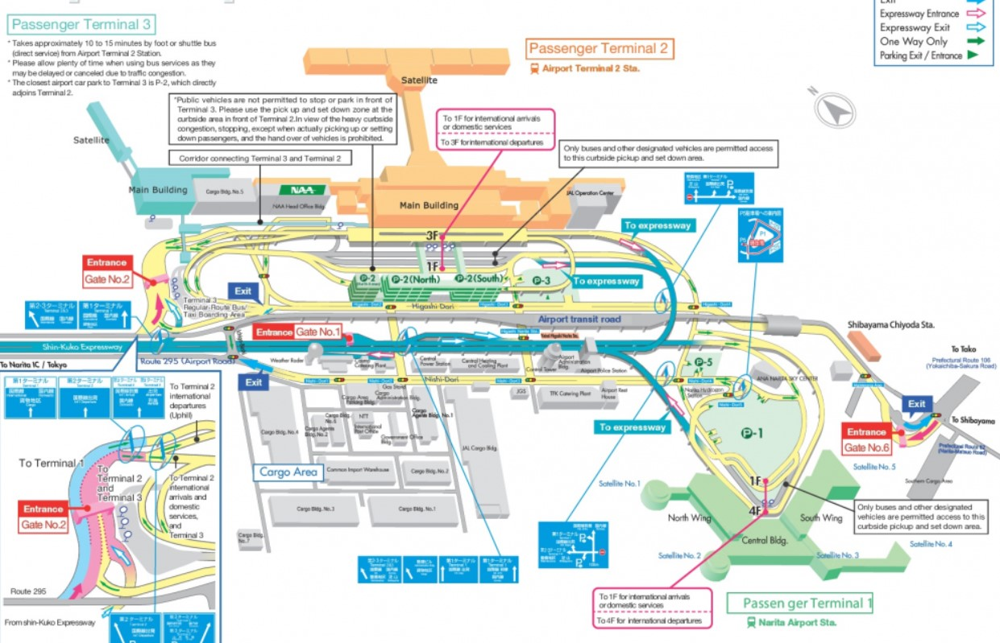
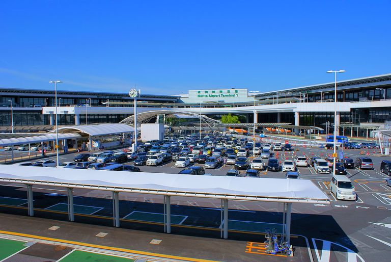
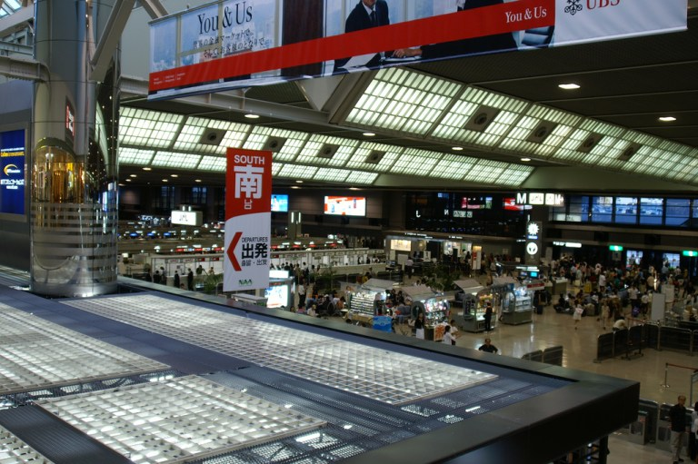
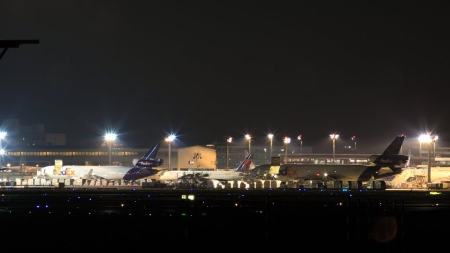
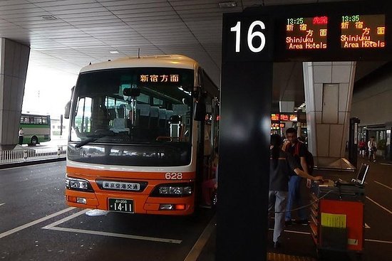
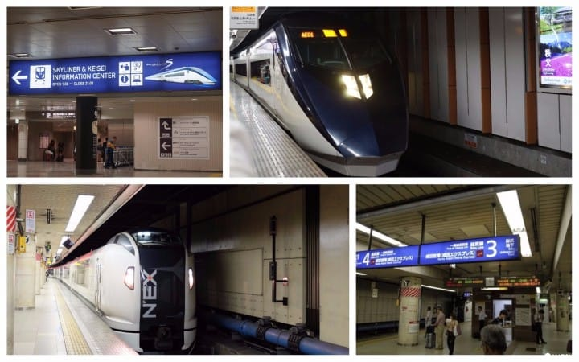

Narita es actualmente el aeropuerto más importante de Japón, donde aterrizan la mayor cantidad vuelos internacionales de una amplia gama de compañías. Cuenta con tres terminales, a los que el visitante llegará dependiendo de la
compañía con la viaje.
A diferencia del aeropuerto Haneda, Narita se encuentra a 60 kilómetros de Tokio, por lo que su trayecto de conexión con la capital durará 1 hora aproximadamente. Para desplazarse al centro de la metrópolis este aeropuerto cuenta
con diferentes medios de transporte que varía en precios y lugares de llegada.

GUÍA del PASAJERO
La mayoría de los visitantes llegan a Japón por el aeropuerto internacional de Narita (NRT), que cuenta con unas cómodas y modernas instalaciones con un buen diseño y todo tipo de facilidades y mucho por ver y hacer. En las dos
terminales principales hay numerosas tiendas, restaurantes, zonas de espera tranquilas y miradores, y se ofrecen actividades de entretenimiento.
Los planes para la construcción de este aeropuerto se iniciaron en 1962 debido a la congestión del Aeropuerto Internacional de Haneda (en Tokio) y no estuvo exenta de conflictos con los agricultores cuyas tierras se expropiaron. El
aeropuerto finalmente entró en funcionamiento en 1978 con el nombre de New Tokyo International Airport. El 1 de abril de 2004 se le puso el nombre actual (Narita International Airport).En 1986, el aeropuerto empezó una segunda
fase de construcción, que culminó con la inauguración de la segunda pista en abril de 2002, justo a tiempo para el Mundial de fútbol de Corea y Japón.Narita es un aeropuerto de gran tráfico. Debido a ello, las autoridades japonesas
han limitado el número de vuelos que cada compañía puede operar desde Narita, convirtiéndolo en un aeropuerto caro tanto para las compañías como para los usuarios. Recientemente, el Aeropuerto Internacional de Haneda en Tokio,
fue autorizado a recibir nuevos vuelos internacionales provenientes de Asia para aligerar la carga de Narita. Haneda se encuentra a apenas 14 km de la estación central de Tokio, por lo que es preferido por los ejecutivos, mientras
que Narita se orienta a turistas.
El Aeroupuerto Internacional Narita se localiza en Narita-shi, Chiba 282-8601, Japón
Mapa Aeropuerto Internacional de Narita
<
¿Cómo llegar?
Narita es el principal aeropuerto internacional de Tokio, por lo que está muy bien comunicado. La forma más común de acceder a él es con el tren rápido Narita Express (NEX) de Japan Railway, que cubre varias estaciones importantes como las de Shinagawa,
Shibuya, Shinjuku, Ikebukuro y Tokio.
El trayecto de ida dura aproximadamente 1 hora. Si viajas en tren local, puedes tomar la línea rápida JR Sobu desde la estación de Tokio. Keisei opera las líneas Skyliner, Morningliner y Eveningliner, todas ellas conectadas a la de
Yamanote.
También hay muchas otras alternativas, como los servicios privados de autobuses limusina que normalmente salen de la estación de Tokio o de los hoteles más grandes.

Terminales
Narita cuenta con tres terminales de pasajeros que en total suman una superficie cubierta de 884 mil metros cuadrados.
-
Terminal 1
La terminal 1 tiene 455 mil metros cuadrados y está dividida en dos alas con 5 niveles. El ala norte es utilizada por 14 aerolíneas que incluyen a las miembro de Skyteam, mientras que en el ala sur operan 25 aerolíneas la mayoría
de ellas de Star Alliance. Posee 37 puntos de contacto con mangas, cuatro de los cuales son aptos para Airbus A380. Tiene una capacidad máxima proyectada de 25 millones de pasajeros al año.

-
Terminal 2
La terminal 2, inaugurada en 1992, de 405 mil metros cuadrados en 5 niveles atiende la operación de 30 aerolíneas, muchas de ellas de Oneworld. Posee 28 puntos de contacto con mangas, dos de los cuales son aptos para Airbus A380. Su capacidad máxima proyectada
es de 17 millones de pasajeros al año.

-
Terminal 3
La terminal 3, inaugurada en abril de este año, tiene 66 mil metros cuadrados en 3 niveles y en ella operan Jeju Air, Jetstar, Spring y Vanilla Air. Tiene un diseño y acabado sencillo que permite reducir costos de operación en alrededor de un 40% para
vuelos internacionales y 15% para vuelos domésticos. Su capacidad máxima proyectada es de 7,5 millones de pasajeros al año. Una curiosidad en el diseño de esta terminal es que, a tono con los juegos olímpicos que tendrán
lugar en Tokio en 2020, se crearon «corredores» visuales en el piso que se asemejan a una pista de atletismo. Una muy original (y de bajo costo) idea que le añade color y estilo a la terminal

Transporte
- Autobús: Existen diversos autobuses con sede en el aeropuerto que te pueden llevar a diversos destinos, los boletos de autobús se pueden adquirir en la “Sala de arribos” de la terminal 1 y 2, y en el segundo piso de la terminal
3. Las líneas de autobuses son Narita Airport Transport, Tokyo Shuttle, Chiba Kotsu, JR Bus Kanto y el Airport Limousine Bus, cada línea se dirige a destinos específicos.

- Tren: En el nivel B1 de las terminales 1 y 2 se encuentran las estaciones del tren, las cuales son: Skyliner, Access Express, Keisei Main Line, Narita Express, Airport Narita y el Narita Line–Sobu Line.

Conoce el Aeropuerto de Narita
La pasarela de entrada internacional a Japón ofrece una variedad de artículos, alimentos, y eventos culturales gratuitos
La mayoría de los visitantes llegan a Japón por el aeropuerto internacional de Narita (NRT), que cuenta con unas cómodas y modernas instalaciones con un buen diseño y todo tipo de facilidades y mucho por ver y hacer. En las dos terminales
principales hay numerosas tiendas, restaurantes, zonas de espera tranquilas y miradores, y se ofrecen actividades de entretenimiento.
No te pierdas...
- Los miradores, donde podrás relajarte y ver cómo despegan y aterrizan los aviones
- Las tiendas y restaurantes de primera categoría
- Kabuki Gate, un espacio donde podrás saborear la cultura japonesa tradicional
Tiendas de primera
En las tiendas del NRT encontrarás artículos para el viaje, así como refrigerios, souvenirs y otros objetos divertidos. Cuenta con tiendas de electrónica, artesanía japonesa, anime y manga, además de librerías, tiendas de comestibles,
moda de marcas reconocidas como Uniqlo, Birkenstock, Muji To Go, Hello Kitty Japan, Cath Kidston o Samantha Vega, entre otras.
Date un capricho dulce
El aeropuerto internacional de Narita cuenta con una gran variedad de artículos y es un lugar excelente para comprar recuerdos de camino a casa. Entre los artículos más populares están los Kit Kat y Pocky de té verde, bombones y pasteles,
té, toallas de mano, muñecas tradicionales, abanicos japoneses u objetos de personajes como Hello Kitty y Poké
Los miradores del NRT
Uno de los principales atractivos del aeropuerto internacional de Narita son los miradores gratuitos de sus dos terminales principales, donde podrás relajarte y contemplar como despegan y aterrizan los aviones. También hay bancos frente
a las pistas y mesas al aire libre, así como tiendas donde poder adquirir bebidas y algo para picar.
Comer en el aeropuerto internacional de Narita
En el aeropuerto hay restaurantes donde podrás pedir comida tradicional japonesa, pasta, comida china e hindú, ramen y comida rápida. También hay bares y cafeterías donde sirven bebidas y tentempiés. Hay opciones para todos los gustos,
desde elegantes restaurantes japoneses hasta locales de comida rápida y económica.
Descubre la cultura japonesa
Si bien todos los aeropuertos cuentan con establecimientos de comida, tiendas y zonas de descanso, el aeropuerto internacional de Narita también ofrece la posibilidad de sumergirse en la tradicional cultura japonesa. Kabuki Gate es
un espacio dentro del aeropuerto en el que se ofrecen eventos gratuitos durante todo el año, como demostraciones de ceremonias del té o de caligrafía, o actuaciones musicales. También cuenta con exposiciones de trajes tradicionales
kabuki y otros objetos culturales durante todo el año.
Descubre aún más con Narico
Una característica única del aeropuerto internacional de Narita es la aplicación móvil Narico, un asistente virtual parecido a Siri, pero diseñado única y exclusivamente para el NRT. Pregunta a Narico y te dirá qué servicios ofrece
el aeropuerto y dónde encontrarlos. La aplicación está disponible en inglés tanto para Android como para iOS.